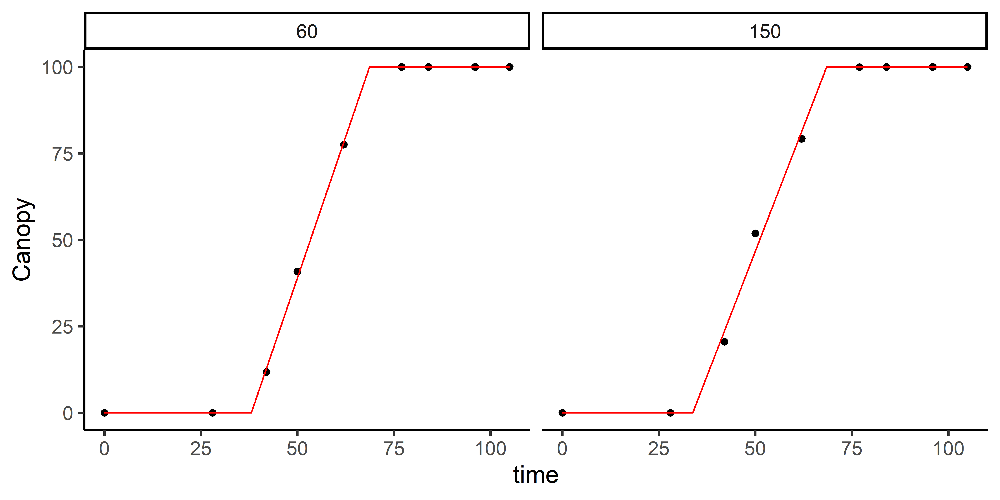
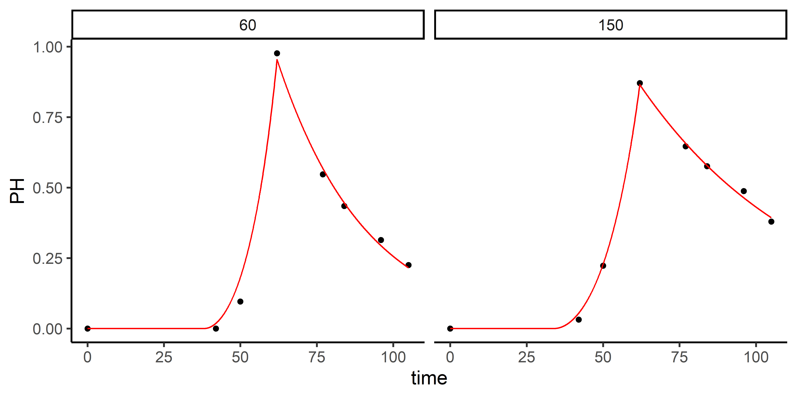
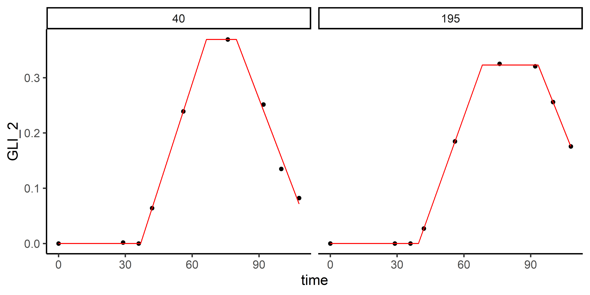

exploreHTP is designed to assist researchers and plant breeders in efficiently exploring and analyzing data derived from drone imagery. This package offers a suite of tools tailored to the unique needs of plant breeding data, facilitating comprehensive data exploration, correlation analysis, data manipulation, and flexible data modeling.
Installation
You can install the development version of exploreHTP from GitHub with:
# install.packages("devtools")
devtools::install_github("AparicioJohan/exploreHTP")1. Reading Data
This is a basic example which shows how to use exploreHTP:
library(exploreHTP)
data(dt_chips)
results <- read_HTP(
data = dt_chips,
genotype = "Gen",
time = "DAP",
plot = "Plot",
traits = c("Canopy", "PH"),
row = "Row",
range = "Range"
)
names(results)
[1] "summ_traits" "exp_design_resum" "locals_min_max" "dt_long"
plot(results, type = "evolution")
head(results$summ_traits)| trait | time | Min | Mean | Median | Max | SD | CV | n | miss | miss% | neg% |
|---|---|---|---|---|---|---|---|---|---|---|---|
| Canopy | 28 | 0.00 | 0.01 | 0.00 | 0.52 | 0.06 | 4.46 | 196 | 0 | 0 | 0 |
| Canopy | 42 | 1.33 | 19.31 | 19.72 | 41.65 | 8.14 | 0.42 | 196 | 0 | 0 | 0 |
| Canopy | 50 | 18.53 | 52.75 | 53.36 | 82.39 | 11.76 | 0.22 | 196 | 0 | 0 | 0 |
| Canopy | 62 | 52.37 | 85.06 | 86.31 | 99.86 | 9.63 | 0.11 | 196 | 0 | 0 | 0 |
| Canopy | 77 | 94.83 | 99.83 | 99.94 | 100.00 | 0.51 | 0.01 | 196 | 0 | 0 | 0 |
| Canopy | 84 | 95.40 | 99.88 | 100.00 | 100.02 | 0.51 | 0.01 | 196 | 0 | 0 | 0 |
| n | n_gen | n_row | n_range | num_of_reps | num_of_gen |
|---|---|---|---|---|---|
| 196 | 178 | 14 | 14 | 1_2_3 | 163_12_3 |
2. Plotting correlations (1)
# Trait by Time
table <- plot(results, label_size = 4, signif = TRUE, n_row = 1)
head(table)| time | col | row | corr | p.value | n | signi |
|---|---|---|---|---|---|---|
| 42 | Canopy | PH | 0.77 | 0.0000000 | 196 | *** |
| 50 | Canopy | PH | 0.89 | 0.0000000 | 196 | *** |
| 62 | Canopy | PH | 0.50 | 0.0000000 | 196 | *** |
| 77 | Canopy | PH | 0.28 | 0.0000557 | 196 | *** |
| 84 | Canopy | PH | 0.23 | 0.0009829 | 196 | *** |
| 96 | Canopy | PH | 0.43 | 0.0000000 | 196 | *** |
| 105 | Canopy | PH | 0.52 | 0.0000000 | 196 | *** |
3. Plotting correlations (2)
# Time by Trait
table <- plot(results, type = "time_by_trait", label_size = 4, signif = TRUE)
head(table)| trait | col | row | corr | p.value | n | signi |
|---|---|---|---|---|---|---|
| Canopy | 28 | 105 | -0.06 | 1.0000000 | 196 | ns |
| Canopy | 28 | 42 | 0.21 | 0.0646376 | 196 | ns |
| Canopy | 28 | 50 | 0.17 | 0.2985603 | 196 | ns |
| Canopy | 28 | 62 | 0.04 | 1.0000000 | 196 | ns |
| Canopy | 28 | 77 | 0.06 | 1.0000000 | 196 | ns |
| Canopy | 28 | 84 | 0.04 | 1.0000000 | 196 | ns |
4. Estimating days to emergence and days to full canopy
out <- canopy_HTP(x = results, index = "Canopy", plot_id = c(60, 150))print(out)
Call:
fn_piwise(time, t1, t2, k)
Sum of Squares Error:
Min. 1st Qu. Median Mean 3rd Qu. Max.
4.894 13.772 22.650 22.650 31.528 40.406
Optimization Results `head()`:
plot genotype t1 t2 sse k auc dt slope
60 W19026-15 38.0 68.7 4.89 100 5162 30.6 3.26
150 W19023-21 33.8 68.5 40.41 100 5386 34.7 2.88
Metrics:
Plots Timing Convergence Iterations
2 0.11 (min) 100% 273.5 (plot)
| plot | genotype | row | range | t1 | t2 | sse | k | auc | dt | slope |
|---|---|---|---|---|---|---|---|---|---|---|
| 60 | W19026-15 | 4 | 5 | 38.045 | 68.662 | 4.894 | 99.956 | 5162.344 | 30.617 | 3.265 |
| 150 | W19023-21 | 10 | 11 | 33.791 | 68.496 | 40.406 | 100.000 | 5385.674 | 34.705 | 2.881 |
5. Modelling Plant Height
ph_1 <- height_HTP(
x = results,
height = "PH",
canopy = "Canopy",
plot_id = c(60, 150),
fn = "fn_exp2_exp"
)print(ph_1)
Call:
fn_exp2_exp(time, t1, t2, alpha, beta)
Sum of Squares Error:
Min. 1st Qu. Median Mean 3rd Qu. Max.
0.001433 0.003388 0.005343 0.005343 0.007298 0.009253
Optimization Results `head()`:
plot genotype t2 alpha beta sse t1 auc
60 W19026-15 62 0.001168 -0.0346 0.00925 38.0 28.0
150 W19023-21 62 0.000783 -0.0183 0.00143 33.8 32.9
Metrics:
Plots Timing Convergence Iterations
2 0.29 (min) 100% 964.5 (plot)
| plot | genotype | row | range | t2 | alpha | beta | sse | t1 | auc |
|---|---|---|---|---|---|---|---|---|---|
| 60 | W19026-15 | 4 | 5 | 62 | 0.001 | -0.035 | 0.009 | 38.045 | 27.977 |
| 150 | W19023-21 | 10 | 11 | 62 | 0.001 | -0.018 | 0.001 | 33.791 | 32.890 |
6. Modelling Maturity
data(dt_potato)
results <- read_HTP(
data = dt_potato,
genotype = "Gen",
time = "DAP",
plot = "Plot",
traits = c("Canopy", "GLI_2"),
row = "Row",
range = "Range"
)
mat <- maturity_HTP(
x = results,
index = "GLI_2",
canopy = "Canopy",
plot_id = c(195, 40)
)
print(mat)
Call:
fn_lin_pl_lin2(time, t1, t2, dt, k, beta)
Sum of Squares Error:
Min. 1st Qu. Median Mean 3rd Qu. Max.
1.024e-05 1.768e-04 3.435e-04 3.435e-04 5.101e-04 6.767e-04
Optimization Results `head()`:
plot genotype t1 t2 dt k beta sse auc t3
40 W17043-37 36.9 66.4 13.4 0.369 -0.0106 6.77e-04 16.6 79.9
195 W16219-8 39.6 68.3 25.1 0.323 -0.0100 1.02e-05 16.4 93.3
Metrics:
Plots Timing Convergence Iterations
2 0.32 (min) 100% 341 (plot)
| plot | genotype | row | range | t1 | t2 | dt | k | beta | sse | auc | t3 |
|---|---|---|---|---|---|---|---|---|---|---|---|
| 40 | W17043-37 | 12 | 3 | 36.880 | 66.416 | 13.438 | 0.369 | -0.011 | 0.001 | 16.615 | 79.854 |
| 195 | W16219-8 | 13 | 14 | 39.591 | 68.279 | 25.058 | 0.323 | -0.010 | 0.000 | 16.376 | 93.336 |